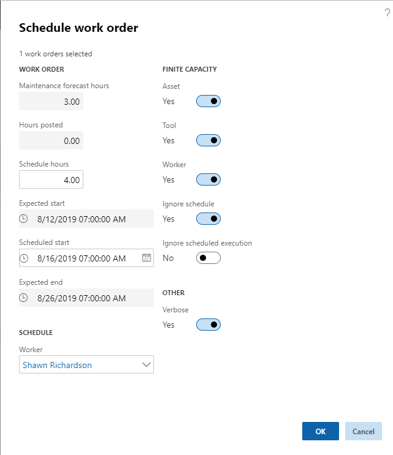

Arbeitsauftrag disponieren
Important
Dynamics 365 for Finance and Operations hat sich zu speziell entwickelten Anwendungen entwickelt, mit denen Sie bestimmte Geschäftsfunktionen verwalten können. Weitere Informationen zu diesen Änderungen finden Sie im Dynamics 365-Lizenzierungshandbuch.
Sie können einen Arbeitsauftrag oder Arbeitsauftragseinzelvorgänge für eine Arbeitskraft einplanen, indem Sie die Funktion Disponieren verwenden.
Klicken Sie auf Anlagenverwaltung > Allgemein > Arbeitsaufträge > Alle Arbeitsaufträge oder Aktive Arbeitsaufträge.
Wählen Sie den Arbeitsauftrag in der Liste aus.
Klicken Sie auf der Registerkarte Allgemeines auf Disponieren.
Wählen Sie im Dialogfeld Arbeitsauftrag planen die Arbeitskraft im Feld Arbeitskraft aus.
Im Feld Stunden planen können Sie erwartete Arbeitsstunden einfügen, falls sich die erwarteten Arbeitsstunden von den Planungsstunden unterscheiden.
Im Feld Geplanter Start können Sie Startdatum und -uhrzeit bearbeiten, nach Bedarf.
Soll der Planungsprozess die Kapazitätseinschränkungen zu Ressourcen, die bereits für andere Einzelvorgänge geplant sind, berücksichtigen, überprüfen Sie, ob die Umschaltschaltflächen Anlage, Werkzeug und Arbeitskraft auf Ja festgelegt sind. Wenn ausführliche Informationen zum Planungsprozess angezeigt werden sollen, wählen Sie Ja bei der Umschaltschaltfläche Ausführlich aus. Das bedeutet, dass detaillierte Informationen zu den kalkulierten Bewertungen für den Arbeitsauftrag im Infolog angezeigt werden.
Wählen Sie Ja bei der Umschaltschaltfläche Planung ignorieren aus, um abgeschlossene Tage im Kalender zu ignorieren (gilt für Anlage, Arbeitskraft und Tools). Wählen Sie Ja bei der Umschaltschaltfläche Geplante Ausführung ignorieren aus, um Einschränkungen zu ignorieren, die für den Arbeitsauftrag im Zusammenhang mit der Planung ggf. ausgewählt wurden.
Der Geplante Ausführung-Abschnitt enthält Informationen zu den Einstellungen der geplanten Ausführung.
Klicken Sie auf OK. Der Arbeitsauftragslebenszyklusstatus wird automatisch zum Geplant-Lebenszyklusstatus angegebenen Anlagenverwaltung > Einstellungen > Arbeitsaufträge > Lebenszyklusmodelle. aktualisiert.
Die folgende Abbildung zeigt ein Beispiel der Versandmöglichkeiten im Dialogfeld Arbeitsauftrag planen an.

[!NOTE] Wenn Sie die Planung für einen Arbeitsauftrag löschen möchten, wählen Sie den Arbeitsauftrag in Alle Arbeitsaufträge aus und klicken Sie auf Zeitplan löschen in der Registerkarte Allgemein. Denken Sie daran, den Arbeitsauftragslebenszyklusstatus manuell zu aktualisieren, wenn Sie den Zeitplan löschen.